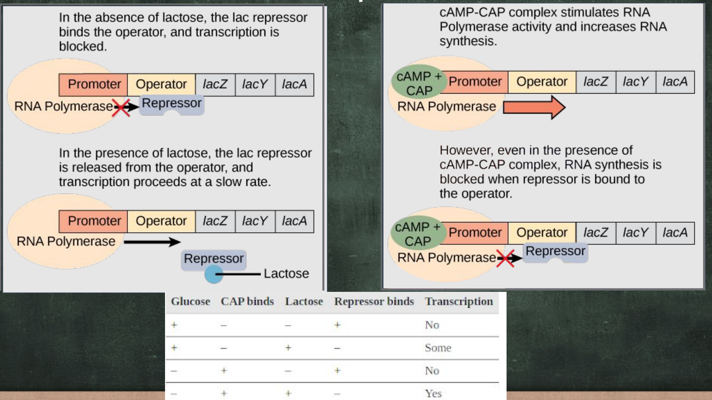

Hai tín hiệu quyết định phiên mã mô hình lac
Phân tử 3 · Phiên mã và điều hòa · 4 trắc nghiệm và 1 tự luận
Bắt đầu học ↓Học trọn chương và làm bộ 80 trắc nghiệm, 15 tự luận
Sau buổi này
- Phân biệt promoter, operator và tác động điều hòa dương/âm.
- Giải thích bốn điều kiện lac ở mức khái niệm và đối chiếu mô hình trp.
Gợi nhớ
Vẽ sơ đồ RNA polymerase, promoter và vị trí của chất ức chế trong operon tự nhiên.
Học kiến thức qua hình
Quan sát hình minh họa

Khung trái của slide tập trung vào LacI và lactose, khung phải vào cAMP–CAP, còn bảng dưới gom các trạng thái. Trong mô hình học, lactose ngoài hệ được xem là điều kiện có tín hiệu allolactose.
Quan sát · So mũi tên phiên mã khi chất ức chế còn gắn với khi cAMP–CAP hỗ trợ tuyển polymerase.
Dự đoán · Nếu cAMP–CAP đã có nhưng chất ức chế còn ở operator, đầu ra có cao như khi cả hai điều kiện thuận lợi không?
Mở giải thích sau khi dự đoán
CAP có thể hỗ trợ tuyển polymerase nhưng LacI còn cản phiên mã. Mức cao cần giải phóng sự cản đó cùng điều kiện hoạt hóa trong mô hình.
| Lactose | Glucose | LacI chặn | CAP hỗ trợ | Đầu ra tương đối |
|---|---|---|---|---|
| Vắng | Cao | Có | Yếu | Rất thấp |
| Vắng | Thấp | Có | Mạnh | Rất thấp |
| Có | Cao | Giảm | Yếu | Thấp |
| Có | Thấp | Giảm | Mạnh | Cao |
Các mức định tính là mô phỏng từ slide MGE-chap3-29-47.pdf tr. 9–12, không phải dữ liệu định lượng.
Đọc hình để tự rút ra cơ chế
Quan sát · Tìm hai dòng đều glucose thấp.
Dự đoán · Vì sao có CAP hỗ trợ mà một dòng vẫn rất thấp?
Mở giải thích sau khi dự đoán
CAP hỗ trợ tuyển polymerase nhưng LacI còn chặn nếu thiếu tín hiệu gỡ ức chế.
Khởi đầu và kết thúc
Trong mô hình vi khuẩn, yếu tố sigma giúp RNA polymerase nhận biết promoter. Khi kéo dài, polymerase đọc mạch khuôn và tổng hợp RNA 5′→3′. Có cơ chế kết thúc nội tại hoặc phụ thuộc Rho tùy bản phiên mã.
Hai tầng lac, một đối chiếu trp
Ở mô hình lac, khi có allolactose, LacI giảm ái lực operator. Khi glucose thấp, cAMP–CAP hỗ trợ phiên mã. Mức cao thường cần cả gỡ ức chế và hoạt hóa. Ở mô hình trp, tryptophan giúp chất ức chế gắn operator trong tầng điều hòa khởi đầu.
Liên hệ thực tế
Trong bài đọc mạch điều hòa, trình bày rõ đầu vào, nơi tín hiệu tác động và dấu dương/âm rồi mới dự đoán đầu ra.
Cụm bài tập
Đọc bảng hai đầu vào lac
Dùng bốn trạng thái trong bảng ngay bên dưới. ‘Có lactose’ quy ước đủ tín hiệu allolactose, các điều kiện khác được giữ như nhau.
| Lactose | Glucose | LacI chặn | CAP hỗ trợ | Đầu ra tương đối |
|---|---|---|---|---|
| Vắng | Cao | Có | Yếu | Rất thấp |
| Vắng | Thấp | Có | Mạnh | Rất thấp |
| Có | Cao | Giảm | Yếu | Thấp |
| Có | Thấp | Giảm | Mạnh | Cao |
Đối chiếu bài làm
Chọn một chỗ còn phân vân. Giải thích lại bằng lời của mình rồi thử một câu cùng dạng.